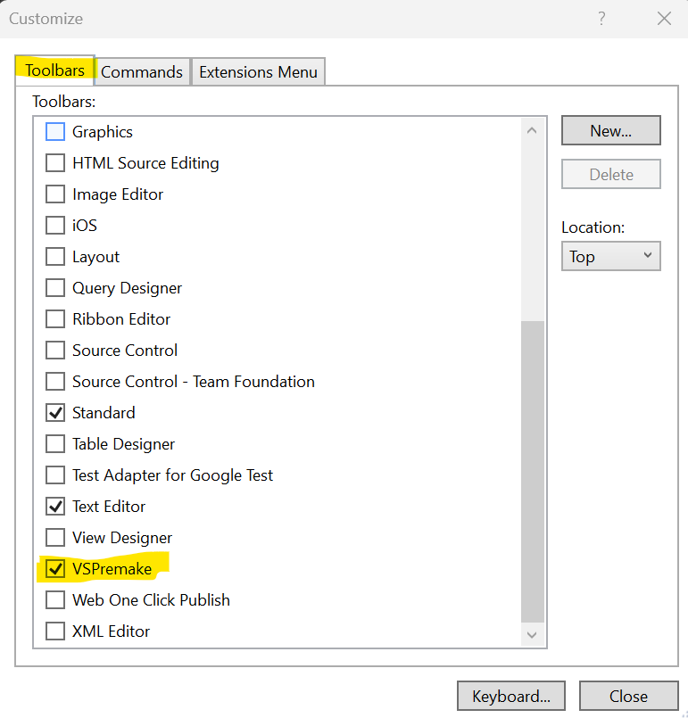

VSPremake
Getting Started
- Run the .VSIX installer
- Thats it!
How To Use It
- One in a solution, you can find the command in the solution menu.
- You can also add the icon to your toolbar. Tools > Customize > Toolbars > VSPremake
 |
 |
Legal Stuff:
I am NOT affiliated with the Premake organization or project.
The brand and trademark below to its respective owner.